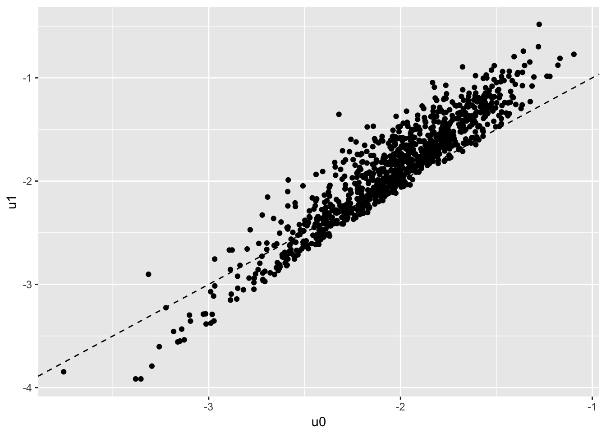

Let’s start with studying static labor supply. We will consider the decision of the agent under the following rule:
\[ \max_{c,h} \frac{c^{1+\eta}}{1+\eta} - \beta \frac{h^{1+\gamma}}{1+\gamma}\\ \text{s.t. } c = \rho \cdot w\cdot h -r + \mu - \beta_0 \cdot 1[h>0] \\ \] The individual takes his wage \(w\) as given, he chooses hours of work \(h\) and consumption \(c\) subject to a given non labor income \(\mu\) as well as a tax regime defined by \(\rho,r\). \(\beta_0\) is a fixed cost associated with working.
We note already that the non labor income can control for dynamic labor supply since we can have \(\mu= b_t - (1+r)b_{t+1}\). This is part of a larger maximization problem where the agents choose optimaly \(b_t\) over time. We will get there next time.
The first order conditions give us \(w(wh +r - \mu)^\eta = \beta h^\gamma\). There is no closed-form but we can very quickly find an interior solution by using Newton maximization on the function \(f(x) = w(wh +r - \mu)^\eta - \beta h^\gamma\). We iterate on
\[x \leftarrow x - f(x)/f'(x)\].
# function which updates choice of hours using Newton step
# R here is total unearned income (including taxes when not working and all)
ff.newt <- function(x,w,R,eta,gamma,beta) {
f0 = w*(w*x + R)^eta - beta*x^gamma
f1 = eta*w^2 * (w*x + R)^(eta-1) - gamma * beta *x^(gamma-1)
x = x - f0/f1
x = ifelse(w*x + R<=0, -R/w + 0.0001,x) # make sure we do not step out of bounds for next iteration
x = ifelse(x<0, 0.0001,x)
x
}We are going to simulate a data set where agents will choose participation as well as the number of hours if they decide to work. To do that we will solve for the interior solution under a given tax rate and compare this to the option of no-work.
p = list(eta=-1.5,gamma = 0.8,beta=1,beta0=0.1) # define preferences
tx = list(rho=1,r=0) # define a simple tax
N=1000
simdata = data.table(i=1:N,X=rnorm(N))
simdata[,lw := X + rnorm(N)*0.2]; # add a wage which depends on X
simdata[,mu := exp(0.3*X + rnorm(N)*0.2)]; # add non-labor income that also depends on X
# we then solve for the choice of hours and consumption
simdata[, h := pmax(-mu+tx$r + p$beta0 ,0)/exp(lw)+1] # starting value
# for loop for newton method (30 should be enough, it is fast)
for (i in 1:30) {
simdata[, h := ff.newt(h,tx$rho*exp(lw),mu-tx$r-p$beta0,p$eta,p$gamma,p$beta) ]
}
# attach consumption, value of working
simdata[, c := exp(lw)*h + mu - p$beta0];
simdata[, u1 := c^(1+p$eta)/(1+p$eta) - p$beta * h^(1+p$gamma)/(1+p$gamma) ];At this point we can regress \(\log(w)\) on \(\log(c)\) and \(\log(h)\) and find precisely the parameters of labor supply:
pander(summary(simdata[,lm(lw ~ log(c) + log(h))]))| Estimate | Std. Error | t value | Pr(>|t|) | |
|---|---|---|---|---|
| (Intercept) | -1.236e-15 | 1.721e-16 | -7.179 | 1.372e-12 |
| log(c) | 1.5 | 8.405e-17 | 1.785e+16 | 0 |
| log(h) | 0.8 | 2.02e-16 | 3.961e+15 | 0 |
| Observations | Residual Std. Error | \(R^2\) | Adjusted \(R^2\) |
|---|---|---|---|
| 1000 | 1.55e-15 | 1 | 1 |
We simply compute the value of choosing \(h=0\), then take the highest of working and not working.
simdata[,u0:= mu^(1+p$eta)/(1+p$eta)];
simdata[,p1:=u1>u0]
ggplot(simdata,aes(x=u0,y=u1)) + geom_point() + geom_abline(linetype=2)
The regression still works, among ecah individual who chooses to work, the FOC is still satified.
pander(summary(simdata[p1==TRUE,lm(lw ~ log(c) + log(h))]))## Warning in summary.lm(simdata[p1 == TRUE, lm(lw ~ log(c) + log(h))]):
## essentially perfect fit: summary may be unreliable| Estimate | Std. Error | t value | Pr(>|t|) | |
|---|---|---|---|---|
| (Intercept) | -7.647e-16 | 8.582e-17 | -8.91 | 3.598e-18 |
| log(c) | 1.5 | 3.653e-17 | 4.106e+16 | 0 |
| log(h) | 0.8 | 1.263e-16 | 6.334e+15 | 0 |
| Observations | Residual Std. Error | \(R^2\) | Adjusted \(R^2\) |
|---|---|---|---|
| 777 | 5.227e-16 | 1 | 1 |
Finally we want to add heterogeneity in the \(\beta\) parameter. I am not sure why := renders in a weird way below, anyway it’s just a colon next to an equal sign:
simdata[,betai := exp(0.5*X+rnorm(N)*0.1)]
simdata[, h := pmax(-mu+tx$r + p$beta0 ,0)/exp(lw)+1]
for (i in 1:30) {
simdata[, h := ff.newt(h,tx$rho*exp(lw),mu-tx$r-p$beta0,p$eta,p$gamma,betai) ]
}
# attach consumption
simdata[, c := exp(lw)*h + mu - p$beta0];
simdata[, u1 := c^(1+p$eta)/(1+p$eta) - betai * h^(1+p$gamma)/(1+p$gamma) ];
simdata[, u0:= mu^(1+p$eta)/(1+p$eta)];
simdata[,p1:=u1>u0]
# let's check that the FOC holds
sfit = summary(simdata[,lm(lw ~ log(c) + log(h) + log(betai))])
expect_equivalent(sfit$r.squared,1)
expect_equivalent(coef(sfit)["log(c)",1],-p$eta)
expect_equivalent(coef(sfit)["log(h)",1],p$gamma)
sfit = summary(simdata[p1==TRUE,lm(lw ~ log(c) + log(h))])
expect_false(coef(sfit)["log(c)",1]==-p$eta)pander(sfit)| Estimate | Std. Error | t value | Pr(>|t|) | |
|---|---|---|---|---|
| (Intercept) | -0.5458 | 0.01615 | -33.79 | 7.707e-160 |
| log(c) | 2.126 | 0.02395 | 88.78 | 0 |
| log(h) | 0.3029 | 0.03221 | 9.406 | 4.577e-20 |
| Observations | Residual Std. Error | \(R^2\) | Adjusted \(R^2\) |
|---|---|---|---|
| 861 | 0.1622 | 0.9633 | 0.9632 |
Question 1. Take the simulated data from the model with heterogenous \(\beta_i\). First explain why regressing \(\log(w)\) on \(\log(c)\), \(\log(h)\) does not deliver correct estimates.
Question 2. Simulate 2 periods of the model (a short panel), keep everything fixed over the 2 periods, but redraw the wage. Estimate the model in differences and recover the parameters using \(\log(w)\) on \(\log(c)\), \(\log(h)\). How does including or not including participation decision affect the results? Explain.
In this section we want to get closer to the Blundell, Duncan and Meghir (1998) exercice. Please drop the heterogeneous \(\beta\) assumption for the rest of the exercise. We first modify the cost to allow for an increase return to X, and for the presence of a change in the tax rate. Simulate wages according to:
simdata[,lw := lb*X + rnorm(N)*0.2]; # add a wage which depends on XWrite a function that can simulate a full cross section and that takes lb as inpute as well as marginal tax rate \(\rho\). It should apply the same function as before to solve for the interior solution, but use the after-tax wage every where.
Question 3. simulate two cross-sections with \((lb=1,\rho=1)\) and \((lb=1.5,\rho=0.8)\) and use 10k indivduals.
Question 4. Add the participation decision to the data generating process. Show that the results are now biased.
Question 5. Extend the model of the previous question 4. to add an excluded variable that affects participation through \(\mu\) but not the wage (keep X everywhere). Devise a way improve the estimates by controling for participation.